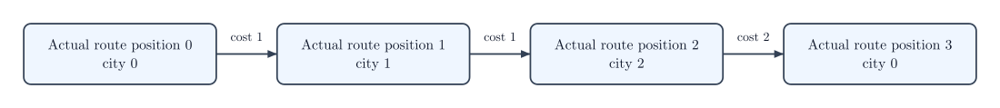
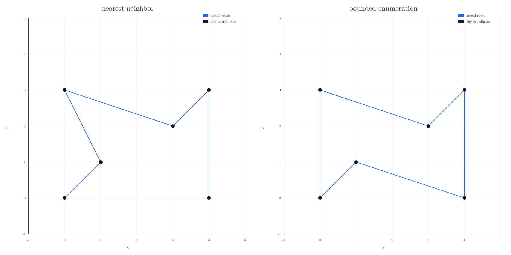
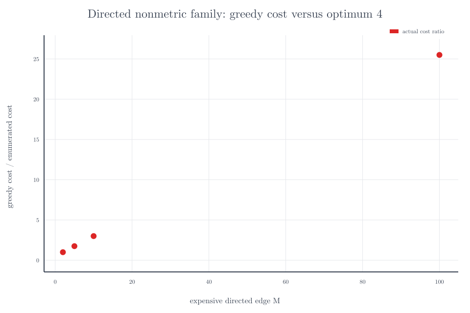
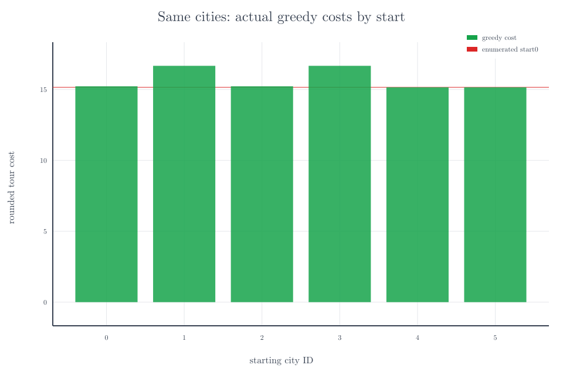

Nearest-neighbor traveling-salesman tours
Abstract
Build a closed route visiting every city once before returning to the start. Choosing the nearest unvisited city gives a quick feasible route but can make expensive later choices. We inspect actual candidate decisions, retain the original three-city example, compare a small geometric route with bounded enumeration, and exhibit a directed family where greedy cost grows while the optimum stays fixed.
A route invariant, not an optimality proof
Start with one visited city. Each iteration scans city IDs in ascending order and appends an unvisited city with minimum outgoing distance, retaining the first on exact ties. Thus the partial route contains distinct selected cities, and one new city is marked per iteration. After n−1 selections, every city has appeared exactly once; appending the original start closes the route. Complete finite nonnegative edge weights guarantee a feasible finite sequence, although a produced cost sum can overflow and then throws.
This invariant proves route feasibility, not optimality. The API permits asymmetric matrices and does not require the triangle inequality or a zero diagonal. Its arbitrary-matrix domain is therefore broader than the symmetric metric setting of many approximation guarantees. The explicit scan costs O(n squared), plus the same-order complete input validation; driver/output storage is O(n) excluding the supplied matrix.
Retain the original three-city example
The original matrix has rows(0,1,2),(1,0,1),(2,1,0). From city0, the actual scan chooses1 then2 and returns to0. Its edge weights1,1,2 sum to4. The diagram unfolds the closed route into four positions so the return edge is visible instead of hiding overlapping collinear geometric edges. The table reads actual eligible-candidate tests.
#include <dm/dm.hpp>
int main() {
std::filesystem::create_directories("build");
auto t =
dm::algorithms::nearest_neighbor_tsp_trace({{0, 1, 2}, {1, 0, 1},
{2, 1, 0}});
dm::graphics::Diagram d;
for (std::size_t i = 0; i < t.analysis.result.tour.size(); ++i) {
auto id = std::to_string(i);
d.node(id, {5.0 * i, 0},
std::format("Actual route position {}\ncity {}", i,
t.analysis.result.tour[i]));
if (i)
d.edge(std::to_string(i - 1), id,
std::format("cost {}", t.edges[i - 1].distance));
}
std::print("| actual current city | eligible candidate | distance | first eligible | best updated |\n| " "---: | ---: | ---: | --- | --- |\n");
for (auto &r : t.trials)
std::print("| {} | {} | {} | {} | {} |\n", r.from, r.candidate,
r.distance, r.first, r.improved);
std::print("\nOriginal actual route: {}, cost: {}.\n",
t.analysis.result.tour, t.analysis.result.cost);
d.save_svg("build/nearest_tsp_tiny.svg");
}| actual current city | eligible candidate | distance | first eligible | best updated |
|---|---|---|---|---|
| 0 | 1 | 1 | true | true |
| 0 | 2 | 2 | false | false |
| 1 | 2 | 1 | true | true |
Original actual route: [0, 1, 2, 0], cost: 4.

A small geometric comparison
The native six-city fixture supplies planar points, and the existing native Euclidean-distance helper builds its complete matrix. The greedy call and bounded permutation enumerator return their own actual tours. The reference enumerates every anchored tour for six cities, retaining the first strict minimum of the same sequential rounded cost objective. This small exhaustive comparator is intentionally expensive and is not a scalable replacement for the greedy scan.
Both panels use equal geometric scales and the same city coordinates. Every plotted segment follows a returned route. Floating Euclidean distances and cost sums remain rounded; arbitrary noninteger weights are not turned into an exact-real optimality certificate by enumeration.
#include <dm/dm.hpp>
int main() {
std::filesystem::create_directories("build");
auto points = dm::algorithms::nearest_neighbor_tsp_demo_points();
auto d = dm::algorithms::euclidean_tsp_distances(points);
auto greedy = dm::algorithms::nearest_neighbor_tsp(d);
auto optimal = dm::algorithms::enumerate_tsp(d);
auto layout = dm::graphics::RLayout::create(1, 2);
std::vector<double> px, py;
for (auto[x, y] : points) {
px.push_back(x);
py.push_back(y);
}
std::print("| native method | actual route | rounded cost |\n| --- | --- | ---: |\n| nearest neighbor | " "{} | {} |\n| bounded enumeration | {} | {} |\n",
greedy.tour, greedy.cost, optimal.tour, optimal.cost);
for (auto &entry : std::vector<std::pair<std::string, dm::algorithms::TourResult>>{{"nearest neighbor", greedy}, {"bounded enumeration", optimal}}) {
std::vector<double> x, y;
for (auto id : entry.second.tour) {
x.push_back(points[id].first);
y.push_back(points[id].second);
}
auto p = dm::graphics::RPlot::create();
p.line(x, y, "actual route", {37, 99, 235}, 2).points(
px, py, "city coordinates", {17, 24, 39}, 6).size(850, 850).margins(
95, 35, 60, 70).x_limits(-1, 5).y_limits(-1, 5).title(entry.first).x_label("x").y_label("y");
layout.add(p);
}
layout.size(1700, 850).fit_panels().save_svg("build/nearest_tsp_geometry.svg");
}| native method | actual route | rounded cost |
|---|---|---|
| nearest neighbor | [0, 4, 3, 5, 2, 1, 0] | 15.22677276241436 |
| bounded enumeration | [0, 3, 5, 2, 1, 4, 0] | 15.15298244508295 |

A directed nonmetric greedy trap
For rows(0,1,2),(1,0,M),(1,1,0), start0 chooses the one-unit edge to city1 before the two-unit edge to city2. It is then forced to pay M to reach2 and one to return, costing M+2. The other anchored cycle0,2,1,0 costs4. For M at least2, those are the only two anchored tours, so the optimum is4. The mathematical ratio(M+2)/4 grows with M, showing why no constant approximation ratio follows on arbitrary directed/nonmetric instances.
The finite native sweep below verifies prescribed integer-weight members of that family. It does not transfer the counterexample to a symmetric Euclidean-metric claim. The matrix generator and small exact comparator live in the library.
#include <dm/dm.hpp>
int main() {
std::filesystem::create_directories("build");
std::vector<double> x, ratio;
std::print("| expensive directed edge M | native greedy cost | enumerated optimum | observed ratio |\n| " "---: | ---: | ---: | ---: |\n");
for (double m : {2., 5., 10., 100.}) {
auto d = dm::algorithms::nearest_neighbor_tsp_adversary(m);
auto g = dm::algorithms::nearest_neighbor_tsp(d);
auto o = dm::algorithms::enumerate_tsp(d);
x.push_back(m);
ratio.push_back(g.cost / o.cost);
std::print("| {} | {} | {} | {} |\n", m, g.cost, o.cost, g.cost / o.cost);
}
auto p = dm::graphics::RPlot::create();
p.points(x, ratio, "actual cost ratio", {220, 38, 38}, 6).title(
"Directed nonmetric family: greedy cost versus optimum 4").x_label(
"expensive directed edge M").y_label("greedy cost / enumerated cost").save_svg("build/nearest_tsp_adversary.svg");
}| expensive directed edge M | native greedy cost | enumerated optimum | observed ratio |
|---|---|---|---|
| 2 | 4 | 4 | 1 |
| 5 | 7 | 4 | 1.75 |
| 10 | 12 | 4 | 3 |
| 100 | 102 | 4 | 25.5 |

Starting cities and actual work
On the six-city geometric fixture, every start is tried separately through the high-level native API. The table preserves its route and actual selected work. Candidate checks include all n city IDs at each of n−1 selections, totaling n(n−1). Only eligible candidates after the first require a strict distance comparison, totaling(n−1)(n−2)/2. Exactly n route edges are summed after closing the nonempty route. These counts exclude allocation, validation and general CPU costs.
Matrix shape and every finite nonnegative edge are validated before route/capture work. A nonempty start must be valid. Empty input returns zero/empty and ignores start; a singleton repeats its start and uses its supplied diagonal cost. Greedy sum overflow throws. The bounded enumerator saturates overflowing unused candidate tours to infinity, allowing a finite minimum to survive; it throws if all candidates overflow. Its default ten-vertex cap is checked before enumeration, and zero disables it.
#include <dm/dm.hpp>
int main() {
std::filesystem::create_directories("build");
auto d =
dm::algorithms::euclidean_tsp_distances(dm::algorithms::nearest_neighbor_tsp_demo_points());
std::vector<double> costs;
std::vector<std::string> labels;
std::print("| start | actual route | rounded cost | visited-ID tests | distance comparisons | edges " "summed |\n| ---: | --- | ---: | ---: | ---: | ---: |\n");
for (std::size_t s = 0; s < d.size(); ++s) {
auto a = dm::algorithms::nearest_neighbor_tsp_analyze(d, s);
costs.push_back(a.result.cost);
labels.push_back(std::to_string(s));
std::print("| {} | {} | {} | {} | {} | {} |\n", s, a.result.tour,
a.result.cost, a.candidate_checks, a.distance_comparisons,
a.edges_summed);
}
auto reference = dm::algorithms::enumerate_tsp(d);
auto p =
dm::graphics::RPlot::barplot(costs, labels, "greedy cost", {22, 163, 74});
p.abline_h(reference.cost, {220, 38, 38}, 1).legend({"greedy cost",
"enumerated start0"},
{{22, 163, 74},
{220, 38, 38}}).title(
"Same cities: actual greedy costs by start").x_label("starting city ID").y_label("rounded tour cost").save_svg("build/nearest_tsp_starts.svg");
}| start | actual route | rounded cost | visited-ID tests | distance comparisons | edges summed |
|---|---|---|---|---|---|
| 0 | [0, 4, 3, 5, 2, 1, 0] | 15.22677276241436 | 30 | 10 | 6 |
| 1 | [1, 5, 2, 4, 0, 3, 1] | 16.67004637770997 | 30 | 10 | 6 |
| 2 | [2, 5, 1, 4, 0, 3, 2] | 15.22677276241436 | 30 | 10 | 6 |
| 3 | [3, 4, 0, 5, 2, 1, 3] | 16.67004637770997 | 30 | 10 | 6 |
| 4 | [4, 0, 3, 5, 2, 1, 4] | 15.15298244508295 | 30 | 10 | 6 |
| 5 | [5, 2, 1, 4, 0, 3, 5] | 15.15298244508295 | 30 | 10 | 6 |

Capture contract, conclusion and references
The optional trace owns the original matrix/start, result route, actual eligible trials/choices and final edge sums. Its quota counts one start unit, input rows and weights, route IDs and individual trial/choice/edge records. Default1000000, zero disables; actual admission failure returns no partial result. Ordinary driver storage remains separate from captured input/history.
The invariant explains feasibility and the records explain each greedy choice. The retained three-city cost4, geometric comparison and directed trap separate valid routes, small bounded optima and absent general guarantees. Start sweeps can improve a chosen finite result without certifying a global optimum for arbitrary large inputs.
Rosenkrantz, Stearns and Lewis, An analysis of several heuristics for the traveling salesman problem (1977) studies nearest-neighbor heuristics and their problem-dependent guarantees. This report explicitly uses the native complete directed-matrix contract and its bounded enumeration reference.
Verification
This ten-report batch passes76 CTest cases,22 directly instrumented ASan/UBSan
cases,119 compiled and executed public examples,513/513 scoped documentation
definitions and ten representative clangd hovers. Independent Python Fraction
arithmetic and likelihood/mass reconstruction verify5266 captured records
with43990 checks, including the original Gaussian controls. Frozen valid-input
comparisons cover DFA quotients, byte recoding, event streams, interpolation,
tours, alignments, real-root paths, packing and nested-sampling trajectories.
Ten checkout headers and ten byte-identical installed development headers
compile independently; an installed-header native consumer links and runs. The
batch has42 executed complete programs and42 visually reviewed native figures,
with HTML/Markdown result and image-byte checks. These are scoped native checks,
not an installation claim for every language binding. Receipts:
build/mepml-conversion/batch-244-253/.